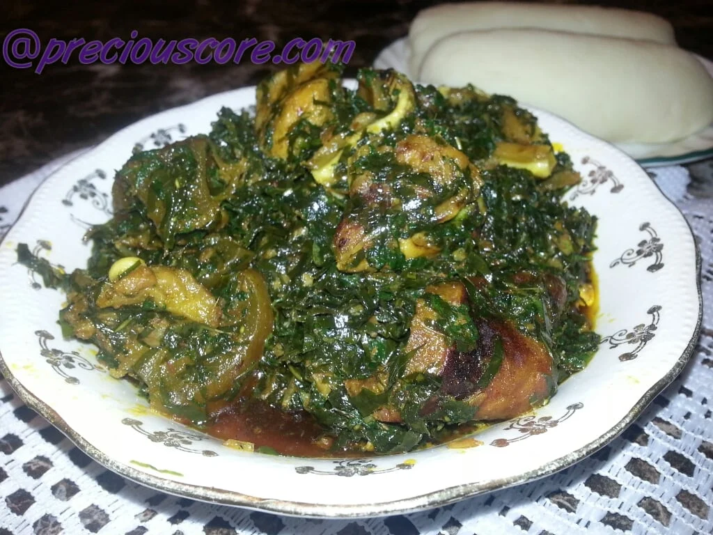

Fufu and Eru

Fufu and Eru is a Cameroon traditional dish
Commonly found in the Southwest Region of Cameroon, it hails from the Manyu Division (Bayangi tribe).
Ingredients
- Eru
- Salt
- Pepper
- Palm Oil
- Crayfish
- Waterleaf
- Maggi Crevette
- Beef skin/canda, beef stripes, beef, goat meat, dried/smoked fish, stocked fish, snails, and/or others
Preparation Steps
- If you are using dried Eru, start by soaking it in water.
- Wash your meat and put in the pot to boil. I used beef skin and beef stripes AKA canda and towel.
- While the meat boils, chop your spinach or waterleaf and set aside.
- When your meat is half-boiled, season with salt. When it is cooked, add in spinach and start stirring. Spinach is quite soft and will shrink fast as seen below.
- Then you drain Eru and add to pot. The small liquid from the Spinach will make the Eru soft
- Add in your fish and mix. I had some already boiled stock fish so I threw it in
- Then add the oil, seasoning cube and lastly crayfish. Tip : Mixing palm oil and canola/vegetable oil keeps the oil from becoming hard when the Eru is cold.
- Stir well and voila, Eru is ready. Serve with Water Fufu (Akpu), Garri or even Pounded Yam.